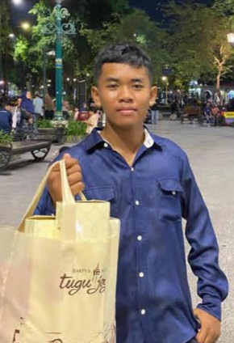

Nama saya Aditya Wahyu Pratama, seorang pelajar kelas 10 di SMA PGRI 2 Jombang. Saya dikenal sebagai pribadi yang disiplin, analitis , dan memiliki antusiasme tinggi terhadap pengembangan diri, baik di bidang sains maupun kepemimpinan organisasi.
Sejak usia dini, saya memiliki ketertarikan mendalam dan bakat di bidang Bahasa indonesia. Bagi saya, memahami hukum alam dan mekanika bukan sekadar kewajiban sekolah, melainkan sebuah minat yang terus saya asah. Selain itu, saya sedang mendalami dunia Web Development, khususnya pada penggunaan HTML dan JavaScript untuk membangun logika sistem yang fundamental.
Saya aktif dalam berbagai organisasi yang membentuk karakter kepemimpinan saya
seperti:
1.Pramuka
2.OSIS
3.PMR
4.PKS
5.SENI LUKIS
6.SENI KRIYA
VISI:Dunia ini diatur oleh angka dan emosi. Biarkan mereka sibuk dengan drama dan perasaan, sementara aku sibuk memastikan bahwa setiap keuntungan berada di bawah kendaliku.
TUJUAN:Mengatur dan menciptakan ulang dunia menjadi, sebuah tempat dimana aku mendapatkan semua yang aku ingin kan.
sebuah ketenangan, tanpa memikirkan nilai, uang, makanan, masa depan, pernikahan, ejekan, dan juga hari esok.
suatu tempat dimana aku tidak perlu memikirkan sesuatu, dan beristirahat.
walau harus mengorbankan segalanya